The art supplies that you decide to use in your art plays a huge role in your art production. Of course, the technique matters the most, but some people prefer certain items more because of their performance. Here are some of my art supples - I tend to stay under a lower budget when searching for items, but what matters most to me is the money to quality ratio. Here are some of my recommendations, based on what mediums you want to use:
| Brand | Product | Cost | Image | Description |
|---|---|---|---|---|
| MUJI | 14 pack 0.38 Black Pen | $14.90 | 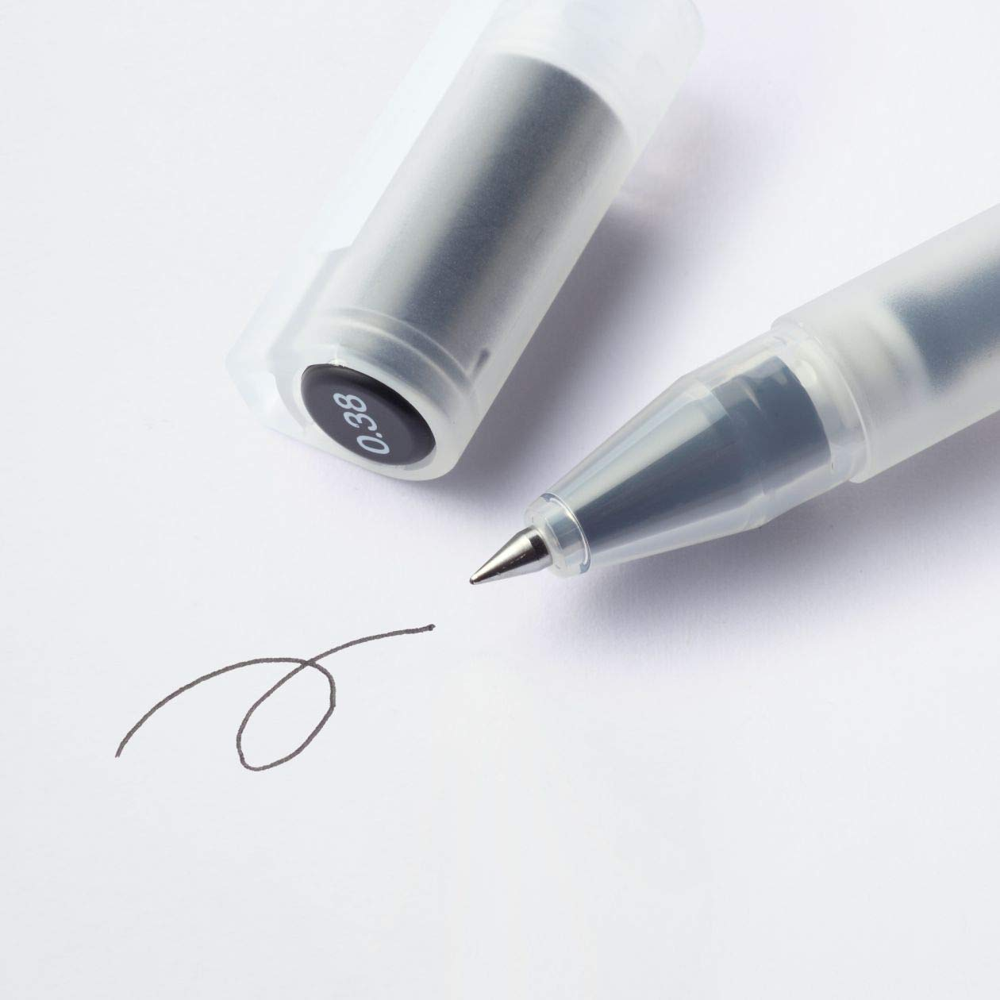 |
The 0.38 black ballpoint pen is one of MUJI's most popular items. Writing or drawing with it is incredibly fluid, with no bleeding at all. It barely smears as well, which is perfect for sketching. It is my main tool for drawing, and it's the most ideal pen to use for small details. |
| MUJI | 0.7 Black Pen | $1.90 | 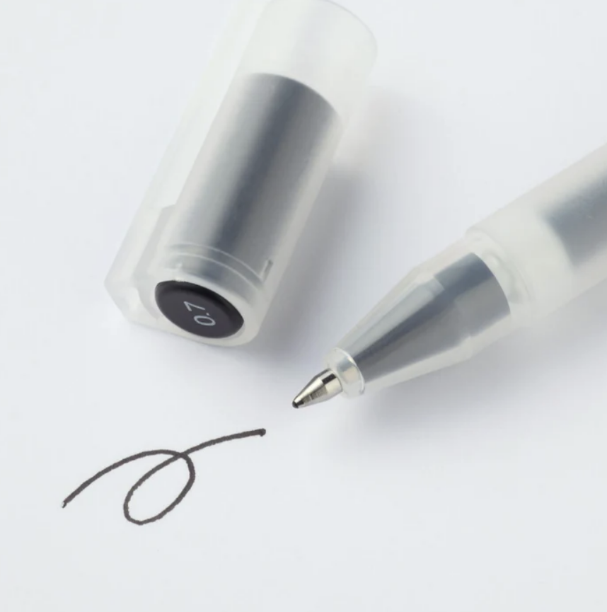 |
The 0.7 black ballpoint pen is noticeably thicker than the regular 0.38 pens. However, with a greater thickness, it is the smoothest pen I've ever used yet. I use this generally for thicker outlining in my art to help distinguish shapes easier. |
| MUJI | 0.5mm Mechanical Pencil | $7.99 | 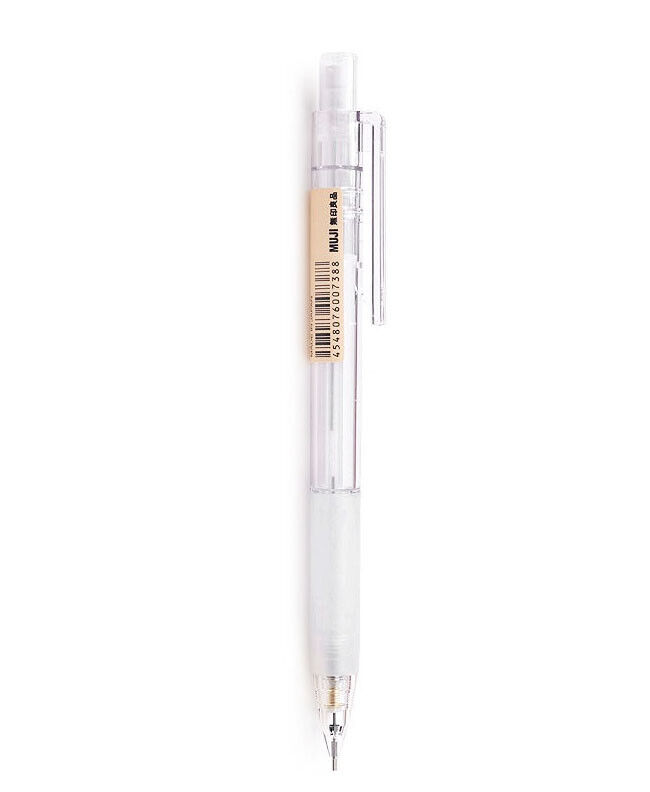 |
MUJI's 0.5 mechanical pencil is my most used stationary supply, since I don't use it only for art, but school as well. The pencil has a sleek, clean design and provides a grip. The only issue I have with this pencil is that it'll start yellowing rather quickly. |
| Canson | Canson ® XL ® Mix Media Pad | $12.99 | 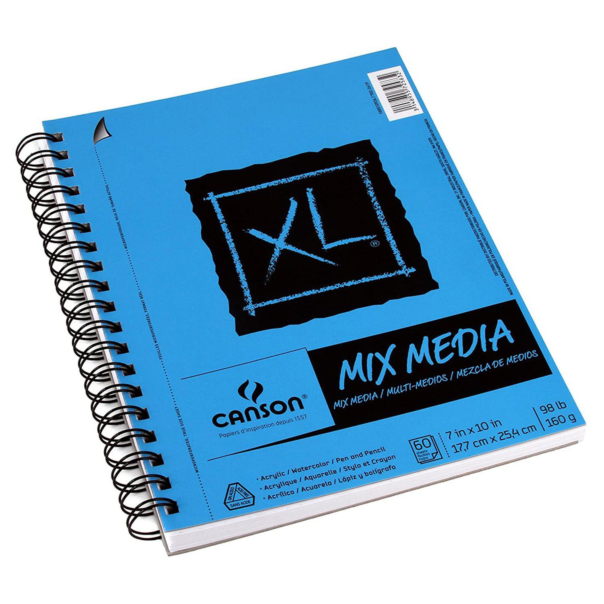 |
The Canson XL Mix Media Pad is my all time favourite art supply. Unlike most sketchbooks, it has a thick, card-stock feel to its paper. Since it's Mix Media, it's the perfect surface for all types of art mediums - sketching, acrylic paint, watercolour, colour pencils - you name it. I've been using this product for years, and will continue to do so. |
| Brand | Product | Cost | Image | Description |
|---|---|---|---|---|
| Apple | Apple Ipad Mini 12 | $599.99 | 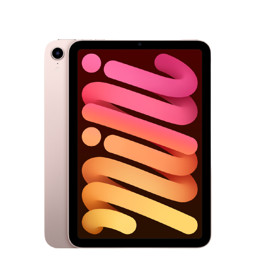 |
Drawing on the ipad mini 12 is incredibly convenient. Despite being a bit small, it's incredibly convenient to use. |
| BAKEWAY | Stylus | $19.98 | 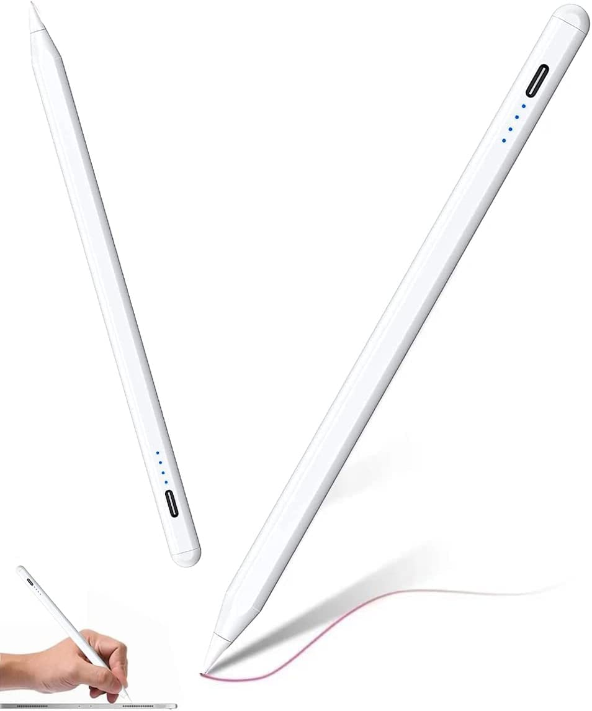 |
Apple pencils typically cost hundreds of dollars. Personally, I don't find them worth it. Clearly, I bought an altnernative for only about $20 dollars, but frankly, they still work beautifully, and don't differ a whole lot from Apple pens (apart from the price). |
| Apple Store | iArtbook | FREE | 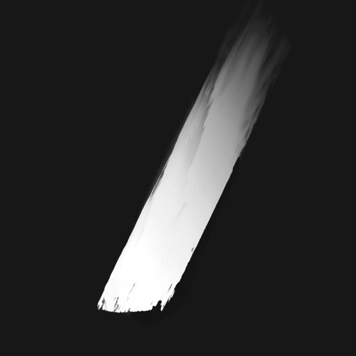 |
Of course, you can't really draw on your ipad without an app to do so. I'm aware of more popular digital painting apps such as Procreate (which do cost money) but I decided to get myself familiar with digital art through free apps such as iArtbook. iArtbook has a vast variety of brushes, and many, many tools to help with rendering. As a beginner digital artist, it was completely comfortable to use, and a total recommend! |
| Brand | Product | Cost | Image | Description |
|---|---|---|---|---|
| Dollarama | Canvas | $4.00 | 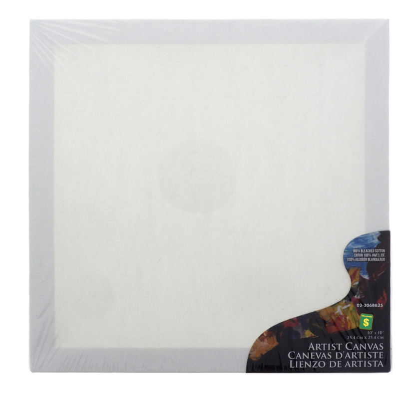 |
With paint, you can literally decorate any surface, from a piece of paper, wood, sculptures - even a wall. I tend to just stick with canvasses, since they don't warp like paper and useful to help decorate your room (which is what I have done). |
| Dollarama | Easel | $4.00 | 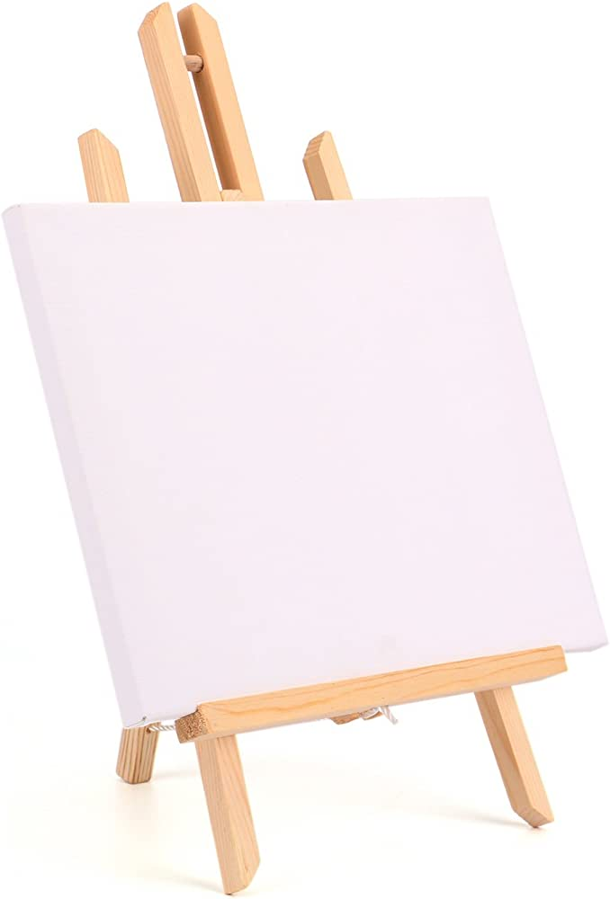 |
An easel is not mandatory in every artist's supply list, but they allow artists to get a different perspective of the piece. Often when I paint on the table and lift my canvas up, it looks a lot different from what I have been staring at for the past few dhours - and not in a good way. Easels lift your canvas to certain degrees to allow more freedom of movement. |
| Dollarama | Paint Palette | $1.25 | 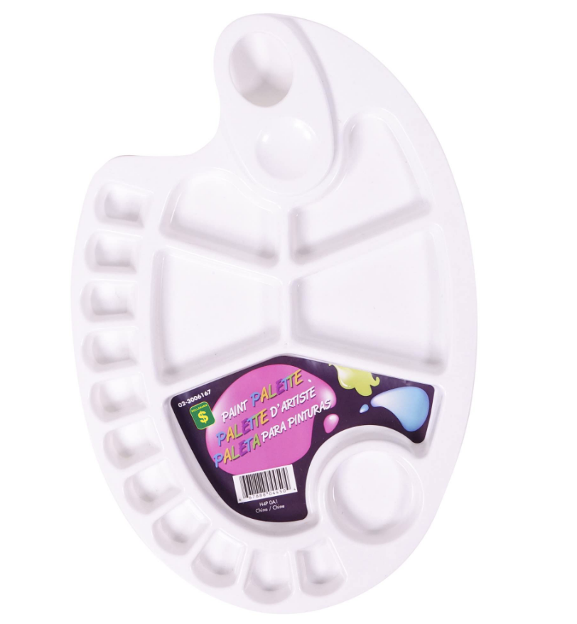 |
A paint palette is a must have for artists. Despite having a variety of colours, artists may still want to create new colours not in their palette. Since I'm a low budget painter, I only have solid paint colours. However, despite only having seven colours, you can create a vast number of new colours. |
| North Shore | Acrylic Paint | $17.97 | 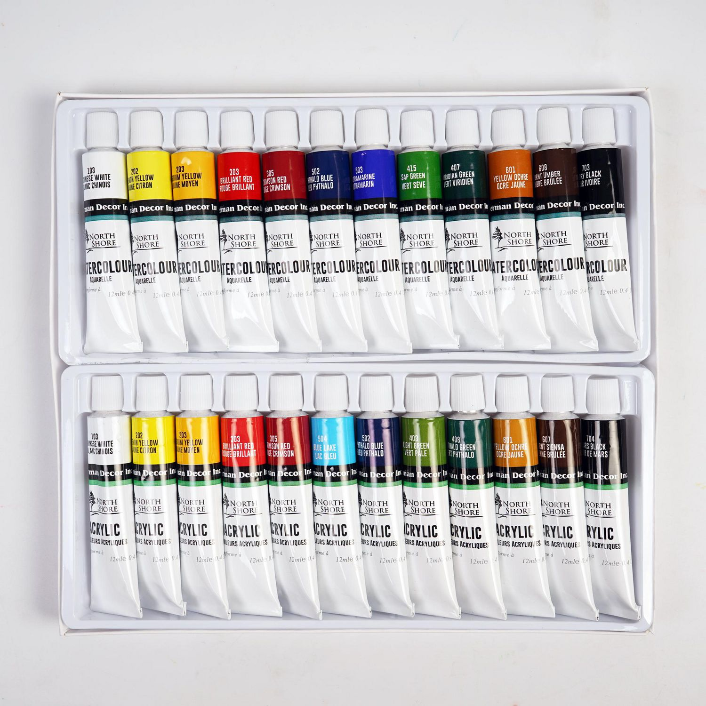 |
Of course, you can't paint without actual paints. I have been using North Shore acrylic paints the longest, since they have extremely good coverage. I'm not particularly fond of the colours they provide, but thankfully you can create a variety of colours.
|